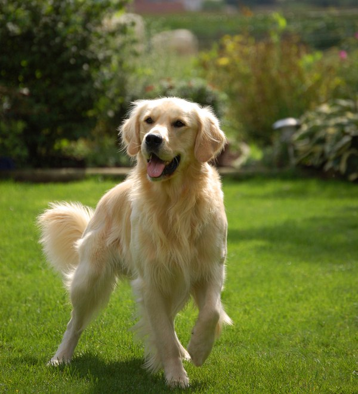

Назад, к выбору <----
1. Кристофер Ноллан
2. 17 лет
3. М
4. Би, но это не точно
5. Золотой ретривер
6.
- Спортивное телосложение, сильные мускулы, идеальное рельефное тело.
- Глаза зеленые, добрые
- Блонди, коротко стрижен
- Шерсть золотистая как у чистокровных собак этой породы
- Хвост пушистый, средней длинный
- Голос в аудио
- Носит джинсы, белые майки и футболки поло, кроссовки или ботинки - зависит от случая
7. Кристофер идеальный парень, очень вежливый и обходительный, знаменитость его школы из-за преуспевании в учебе
(все, кроме математики) и участия в футбольной команде школы. Он живет по правилам, которые всегда были в его
жизни, любое отклонение от них вызывает у него стресс и раздражительность, до тех пор пока он не привыкнет.
Следит за собой, с теми кого любит - очень добр и снисходителен, но иногда бывает зануден или нерешителен, причина выше.
В плане отношений абсолютный нуб, не смотря на всю его идеальность, потому как ни девушками, ни парнями не интересовался.
До определенного момента.
